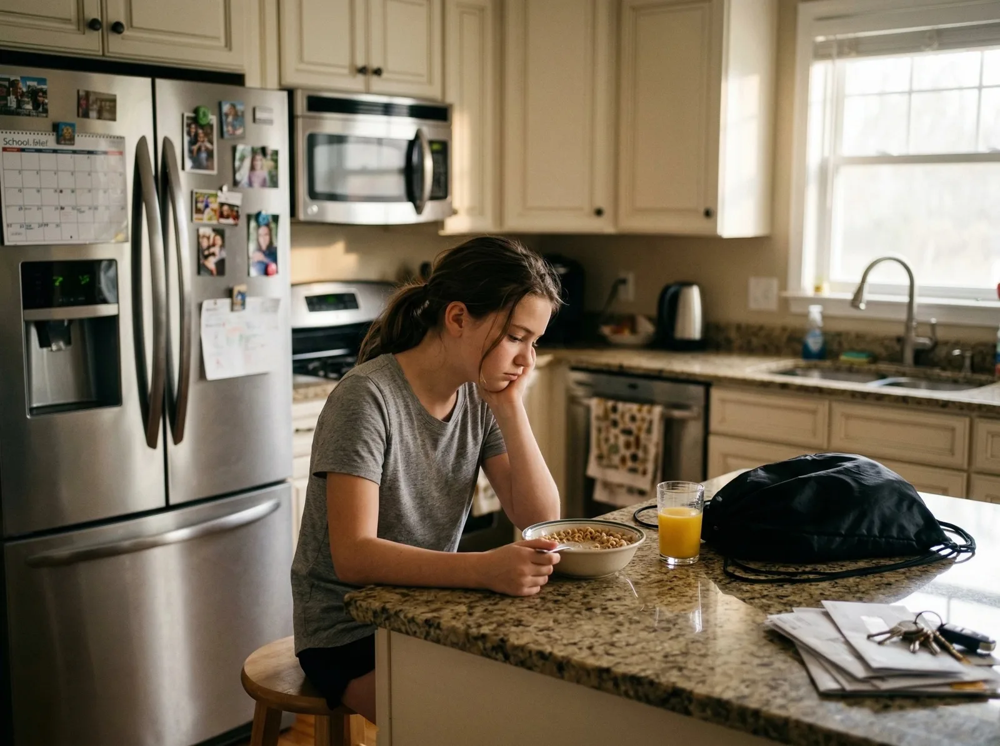
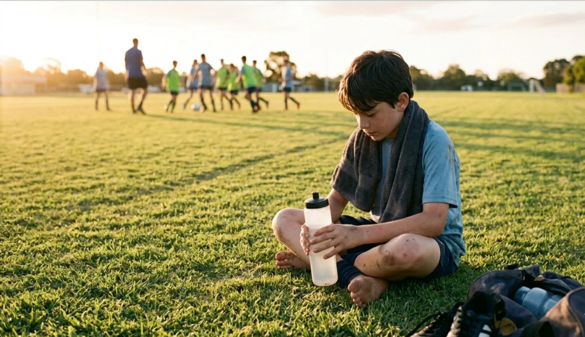
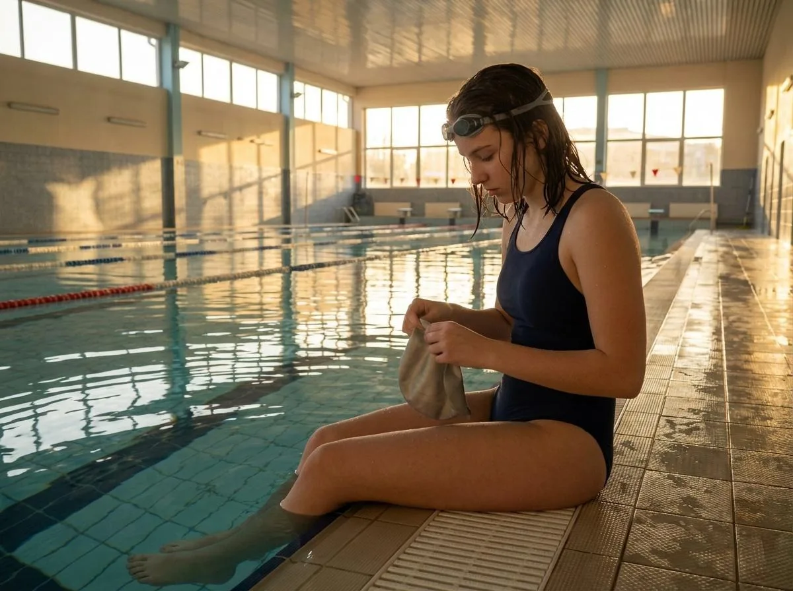

How it works
Readiness, made visible.
R1 tracks three dimensions of readiness – Mind, Body, and Energy – through a daily check-in that takes minutes and reveals what everyone else misses.
R1 tracks three dimensions of readiness – Mind, Body, and Energy – through a daily check-in that takes minutes and reveals what everyone else misses.
Looking to fund the study? Skip to the funding details →
No single measure captures readiness. R1 assesses Mind, Body, and Energy equally – because each one affects the others.

Seven yes-or-no questions. That’s all it takes to generate a readiness snapshot that updates daily and tracks over time.
Children under 12–14 have a parent input on their behalf. The questions are designed to be answered by observation, not interrogation.
Athletes 14 and older complete the check-in independently. It’s their readiness, and the system respects their autonomy.
R1 translates readiness data into session-specific coaching guidance – so coaches don’t need to be sport psychologists to support the whole athlete.
Coaches don’t interpret data. They receive clear, readiness-based adjustments that adapt to each athlete every day.
Try it – a few simple questions, two minutes, every morning.
Every athlete moves through three readiness states. None of them is “bad.” The cycle is how readiness works – and R1 makes it visible.
The athlete needs recovery, support, or time. This is not failure – it’s how the body and mind reset. Coaches receive guidance to reduce load and prioritize connection.
Readiness is building. The athlete is gaining confidence and capacity. Coaches receive guidance to encourage and gently challenge without overwhelming.
The athlete is performing with full capacity across Mind, Body, and Energy. Coaches receive guidance to sustain this state and watch for early signs of overextension.
There is no “bad” state. Rebuilding after competition is expected. Rising after rest is natural. The system tracks these transitions so no one is caught off guard.

Read: Recovery energy — why youth sport breaks down without rest, regulation, and repair. →
Every user sees what they need – and nothing they shouldn’t. The privacy architecture isn’t a policy. It’s a feature.
Parents control what coaches and organizations can see.
Coaches get clarity without the burden of clinical data.
The language is age-appropriate, positive, and never punitive.
R1 works for parents, coaches, and organizations – anyone around the athlete.

R1 is currently in pilot with the first cohort of athletes. The national study will enroll 100,000 children across 30+ sports.